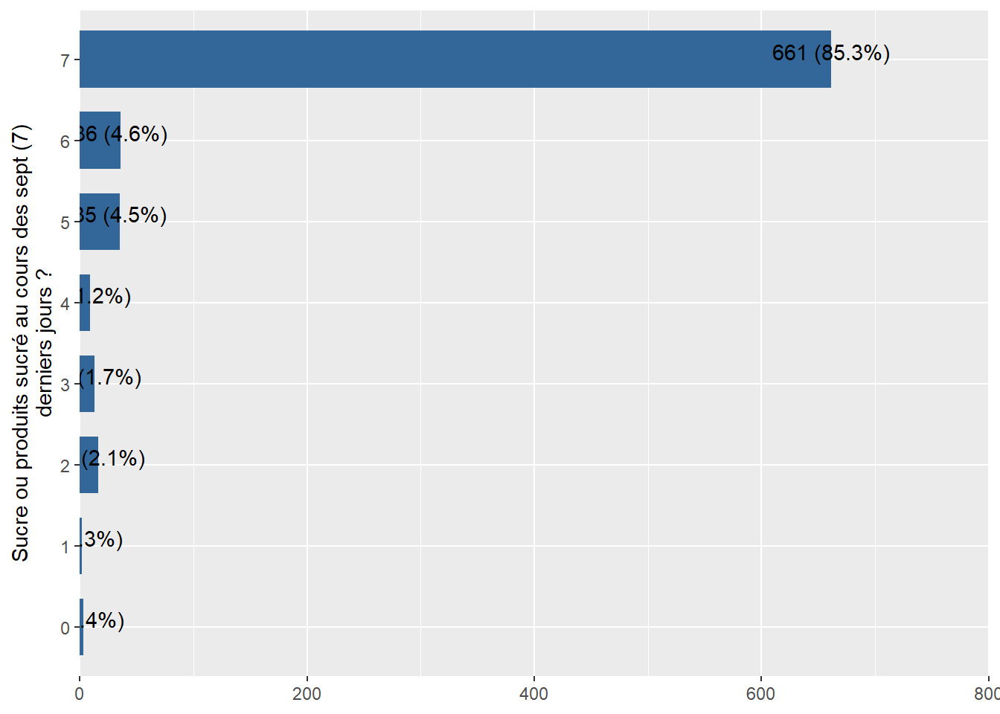

5 Food consumption score
The Food consumption Score (FCS) is an index that aggregates household-level data on the diversity and frequency of food groups consumed over the last 7 days. It is then weighted according to the relative nutritional value of the consumed food groups. Food groups containing nutritionally dense foods (e.g. animal based products) are given greater weight than those containing less nutritional value (e.g. tubers) as follows: (main staples:2, pulses:3, vegetables:1, fruit:1, meat or fish:4, milk:4, sugar:0.5, oil:0.5).
key_vars = c("ID"
# "YEAR",
# "SURVEY",
# "ADMIN0Name",
# "adm0_ocha",
# "adm1_ocha",
# "adm2_ocha",
# "Key_with_subset_data",
# "SvyDatePDM",
# #"RESPConsent",
# "ADMIN1Name",
# "ADMIN2Name",
# # "ADMIN3Name",
# # "sous_bureau",
# # "site",
# # "site_autre",
# "village",
# #"village_autre",
# "Longitude",
# "Latitude",
# "Longitude_precision",
# "Latitude_precision"
)var_needed = c("SCA",
"FCS",
"rCSI"
,"FCSStap",
"FCSStapSRf",
"FCSPulse",
"FCSPulseSRf",
"FCSDairy",
"FCSDairySRf",
"FCSPr",
"FCSPrSRf",
"FCSPrMeatF",
"FCSPrMeatO",
"FCSPrFish",
"FCSPrEgg",
"FCSVeg",
"FCSVegSRf",
"FCSVegOrg",
"FCSVegGre",
"FCSFruit",
"FCSFruitSRf",
"FCSFruitOrg",
"FCSFat",
"FCSFatSRf",
"FCSSugar",
"FCSSugarSRf",
"FCSCond",
"FCSCondSRf",
"rCSILessQlty",
"rCSIBorrow",
"rCSIMealSize",
"rCSIMealAdult",
"rCSIMealNb",
"LhCSIStress1",
"LhCSIStress2",
"LhCSIStress3",
"LhCSIStress4",
"LhCSICrisis1",
"LhCSICrisis2",
"LhCSICrisis3",
"LhCSIEmergency1",
"LhCSIEmergency2",
"LhCSIEmergency3")5.1 FCS : Céréales et tubercules
#expss::val_lab(Chad_baseline_2018$FCSStap)
Chad_baseline_2018 %>%
sjPlot::plot_frq(coord.flip =T,FCSStap,show.na = T)


5.2 FCS : Céréales et tubercules - Sources
# Codes d’acquisition des aliments
# 1 = Production propre (récoltes, élevage) ; 2 = Pêche / Chasse ; 3 = Cueillette ; 4 = Prêts ; 5 = Marché (achat avec des espèces) ; 6 = Marché (achat à crédit) ;
# 7 = Mendicité ; 8 = Troc travail ou biens contre des aliments ; 9 = Dons (aliments) de membres de la famille ou d’amis ; 10 = Aide alimentaire de la société civile, ONG, gouvernement, PAM, etc.expss::val_lab(Chad_baseline_2018$FCSStapSRf)
Chad_baseline_2018 %>%
sjPlot::plot_frq(coord.flip =T,FCSStapSRf,show.na = T)
Chad_baseline_2018 <-
Chad_baseline_2018 %>% dplyr::mutate_at(c("FCSStapSRf"),recode,"1"=1,"2"=5,"3"=6,"4"=8,"5"=9,"6"=10,"7"=2,"8"=NA_real_)
Chad_baseline_2018$FCSStapSRf <- labelled::labelled(Chad_baseline_2018$FCSStapSRf, c(`Production propre (récoltes, élevage)` = 1, `Pêche / Chasse` = 2, Cueillette= 3,`Prêts`=4,`Marché (achat avec des espèces)`=5,`Marché (achat à crédit)`=6,`Mendicité`=7,`Troc travail ou biens contre des aliments`=8,`Dons (aliments) de membres de la famille ou d’amis`=9,`Aide alimentaire de la société civile, ONG, gouvernement, PAM, etc`=10))
#check labels
expss::val_lab(Chad_baseline_2018$FCSStapSRf)
Chad_baseline_2018 %>%
plot_frq(coord.flip =T,FCSStapSRf,show.na = T)


expss::val_lab(Chad_ea_2021$FCSStapSRf)
Chad_ea_2021%>%
sjPlot::plot_frq(coord.flip =T,FCSStapSRf,show.na = T)
expss::val_lab(Chad_ea_2022$FCSStapSRf)
Chad_ea_2022%>%
sjPlot::plot_frq(coord.flip =T,FCSStapSRf,show.na = T)


expss::val_lab(Chad_pdm_2022$FCSStapSRf)
Chad_pdm_2022%>%
sjPlot::plot_frq(coord.flip =T,FCSStapSRf,show.na = T)
expss::val_lab(Chad_ea_2023$FCSStapSRf)
Chad_ea_2023%>%
sjPlot::plot_frq(coord.flip =T,FCSStapSRf,show.na = T)
expss::val_lab(Chad_pdm_2023$FCSStapSRf)
Chad_pdm_2023%>%
sjPlot::plot_frq(coord.flip =T,FCSStapSRf,show.na = T)


5.4 FCS : Légumineuses - Sources
expss::val_lab(Chad_baseline_2018$FCSPulseSRf)
Chad_baseline_2018 %>%
sjPlot::plot_frq(coord.flip =T,FCSPulseSRf,show.na = T)
Chad_baseline_2018 <-
Chad_baseline_2018 %>% dplyr::mutate_at(c("FCSPulseSRf"),recode,"1"=1,"2"=5,"3"=6,"4"=8,"5"=9,"6"=10,"7"=2,"8"=NA_real_)
Chad_baseline_2018$FCSPulseSRf <- labelled::labelled(Chad_baseline_2018$FCSPulseSRf, c(`Production propre (récoltes, élevage)` = 1, `Pêche / Chasse` = 2, Cueillette= 3,`Prêts`=4,`Marché (achat avec des espèces)`=5,`Marché (achat à crédit)`=6,`Mendicité`=7,`Troc travail ou biens contre des aliments`=8,`Dons (aliments) de membres de la famille ou d’amis`=9,`Aide alimentaire de la société civile, ONG, gouvernement, PAM, etc`=10))
#check labels
expss::val_lab(Chad_baseline_2018$FCSPulseSRf)
Chad_baseline_2018 %>%
plot_frq(coord.flip =T,FCSPulseSRf,show.na = T)


expss::val_lab(Chad_ea_2021$FCSPulseSRf)
Chad_ea_2021%>%
sjPlot::plot_frq(coord.flip =T,FCSPulseSRf,show.na = T)
expss::val_lab(Chad_ea_2022$FCSPulseSRf)
Chad_ea_2022%>%
sjPlot::plot_frq(coord.flip =T,FCSPulseSRf,show.na = T)


expss::val_lab(Chad_pdm_2022$FCSPulseSRf)
Chad_pdm_2022%>%
sjPlot::plot_frq(coord.flip =T,FCSPulseSRf,show.na = T)
expss::val_lab(Chad_ea_2023$FCSPulseSRf)
Chad_ea_2023%>%
sjPlot::plot_frq(coord.flip =T,FCSPulseSRf,show.na = T)


5.6 FCS : Lait et produits laitiers - Sources
expss::val_lab(Chad_baseline_2018$FCSDairySRf)
Chad_baseline_2018 %>%
sjPlot::plot_frq(coord.flip =T,FCSDairySRf,show.na = T)
Chad_baseline_2018 <-
Chad_baseline_2018 %>% dplyr::mutate_at(c("FCSDairySRf"),recode,"1"=1,"2"=5,"3"=6,"4"=8,"5"=9,"6"=10,"7"=2,"8"=NA_real_)
Chad_baseline_2018$FCSDairySRf <- labelled::labelled(Chad_baseline_2018$FCSDairySRf, c(`Production propre (récoltes, élevage)` = 1, `Pêche / Chasse` = 2, Cueillette= 3,`Prêts`=4,`Marché (achat avec des espèces)`=5,`Marché (achat à crédit)`=6,`Mendicité`=7,`Troc travail ou biens contre des aliments`=8,`Dons (aliments) de membres de la famille ou d’amis`=9,`Aide alimentaire de la société civile, ONG, gouvernement, PAM, etc`=10))
#check labels
expss::val_lab(Chad_baseline_2018$FCSDairySRf)
Chad_baseline_2018 %>%
plot_frq(coord.flip =T,FCSDairySRf,show.na = T)


expss::val_lab(Chad_ea_2021$FCSDairySRf)
Chad_ea_2021%>%
sjPlot::plot_frq(coord.flip =T,FCSDairySRf,show.na = T)
expss::val_lab(Chad_ea_2022$FCSDairySRf)
Chad_ea_2022%>%
sjPlot::plot_frq(coord.flip =T,FCSDairySRf,show.na = T)


expss::val_lab(Chad_pdm_2022$FCSDairySRf)
Chad_pdm_2022%>%
sjPlot::plot_frq(coord.flip =T,FCSDairySRf,show.na = T)
expss::val_lab(Chad_ea_2023$FCSDairySRf)
Chad_ea_2023%>%
sjPlot::plot_frq(coord.flip =T,FCSDairySRf,show.na = T)expss::val_lab(Chad_pdm_2023$FCSDairySRf)
Chad_pdm_2023%>%
sjPlot::plot_frq(coord.flip =T,FCSDairySRf,show.na = T)


5.8 FCS: Viande, poisson et oeufs - Sources
expss::val_lab(Chad_baseline_2018$FCSPrSRf)
Chad_baseline_2018 %>%
sjPlot::plot_frq(coord.flip =T,FCSPrSRf,show.na = T)
Chad_baseline_2018 <-
Chad_baseline_2018 %>% dplyr::mutate_at(c("FCSPrSRf"),recode,"1"=1,"2"=5,"3"=6,"4"=8,"5"=9,"6"=10,"7"=2,"8"=NA_real_)
Chad_baseline_2018$FCSPrSRf <- labelled::labelled(Chad_baseline_2018$FCSPrSRf, c(`Production propre (récoltes, élevage)` = 1, `Pêche / Chasse` = 2, Cueillette= 3,`Prêts`=4,`Marché (achat avec des espèces)`=5,`Marché (achat à crédit)`=6,`Mendicité`=7,`Troc travail ou biens contre des aliments`=8,`Dons (aliments) de membres de la famille ou d’amis`=9,`Aide alimentaire de la société civile, ONG, gouvernement, PAM, etc`=10))
#check labels
expss::val_lab(Chad_baseline_2018$FCSPrSRf)
Chad_baseline_2018 %>%
plot_frq(coord.flip =T,FCSPrSRf,show.na = T)


expss::val_lab(Chad_ea_2021$FCSPrSRf)
Chad_ea_2021%>%
sjPlot::plot_frq(coord.flip =T,FCSPrSRf,show.na = T)


5.11 FCS : Poissons et coquillage, tels que: (poissons, y compris le thon en conserve, les escargots et / ou d’autres fruits de mer remplacer par des exemples localement pertinents )


5.13 FCS : Légumes et feuilles , tels que : (épinards, oignons, tomates, carottes, poivrons, haricots verts, laitue, etc)


5.14 FCS : Légumes et feuilles , tels que : (épinards, oignons, tomates, carottes, poivrons, haricots verts, laitue, etc) - Sources
expss::val_lab(Chad_baseline_2018$FCSVegSRf)
Chad_baseline_2018 %>%
sjPlot::plot_frq(coord.flip =T,FCSVegSRf,show.na = T)
Chad_baseline_2018 <-
Chad_baseline_2018 %>% dplyr::mutate_at(c("FCSVegSRf"),recode,"1"=1,"2"=5,"3"=6,"4"=8,"5"=9,"6"=10,"7"=2,"8"=NA_real_)
Chad_baseline_2018$FCSVegSRf <- labelled::labelled(Chad_baseline_2018$FCSVegSRf, c(`Production propre (récoltes, élevage)` = 1, `Pêche / Chasse` = 2, Cueillette= 3,`Prêts`=4,`Marché (achat avec des espèces)`=5,`Marché (achat à crédit)`=6,`Mendicité`=7,`Troc travail ou biens contre des aliments`=8,`Dons (aliments) de membres de la famille ou d’amis`=9,`Aide alimentaire de la société civile, ONG, gouvernement, PAM, etc`=10))
#check labels
expss::val_lab(Chad_baseline_2018$FCSVegSRf)
Chad_baseline_2018 %>%
plot_frq(coord.flip =T,FCSVegSRf,show.na = T)


expss::val_lab(Chad_ea_2021$FCSVegSRf)
Chad_ea_2021%>%
sjPlot::plot_frq(coord.flip =T,FCSVegSRf,show.na = T)
#expss::val_lab(Chad_ea_2022$FCSVegSRf)
Chad_ea_2022%>%
sjPlot::plot_frq(coord.flip =T,FCSVegSRf,show.na = T)


expss::val_lab(Chad_pdm_2022$FCSVegSRf)
Chad_pdm_2022%>%
sjPlot::plot_frq(coord.flip =T,FCSVegSRf,show.na = T)


5.16 FCS : Légumes à feuilles vertes,, tels que : ( épinards, brocoli, amarante et/ou autres feuilles vert foncé , feuilles de manioc )


5.17 FCS : Fruits, tels que : (banane, pomme, citron, mangue, papaye, abricot, pêche, etc)


## FCS : Fruits, tels que : (banane, pomme, citron, mangue, papaye, abricot, pêche, etc) - Sources
expss::val_lab(Chad_baseline_2018$FCSFruitSRf)
Chad_baseline_2018 %>%
sjPlot::plot_frq(coord.flip =T,FCSFruitSRf,show.na = T)
Chad_baseline_2018 <-
Chad_baseline_2018 %>% dplyr::mutate_at(c("FCSFruitSRf"),recode,"1"=1,"2"=5,"3"=6,"4"=8,"5"=9,"6"=10,"7"=2,"8"=NA_real_)
Chad_baseline_2018$FCSFruitSRf <- labelled::labelled(Chad_baseline_2018$FCSFruitSRf, c(`Production propre (récoltes, élevage)` = 1, `Pêche / Chasse` = 2, Cueillette= 3,`Prêts`=4,`Marché (achat avec des espèces)`=5,`Marché (achat à crédit)`=6,`Mendicité`=7,`Troc travail ou biens contre des aliments`=8,`Dons (aliments) de membres de la famille ou d’amis`=9,`Aide alimentaire de la société civile, ONG, gouvernement, PAM, etc`=10))
#check labels
expss::val_lab(Chad_baseline_2018$FCSFruitSRf)
Chad_baseline_2018 %>%
plot_frq(coord.flip =T,FCSFruitSRf,show.na = T)


expss::val_lab(Chad_ea_2021$FCSFruitSRf)
Chad_ea_2021%>%
sjPlot::plot_frq(coord.flip =T,FCSFruitSRf,show.na = T)
#expss::val_lab(Chad_ea_2022$FCSFruitSRf)
Chad_ea_2022%>%
sjPlot::plot_frq(coord.flip =T,FCSFruitSRf,show.na = T)


expss::val_lab(Chad_pdm_2022$FCSFruitSRf)
Chad_pdm_2022%>%
sjPlot::plot_frq(coord.flip =T,FCSFruitSRf,show.na = T)
5.18 FCS : Huile/matières grasses/beurre: tels que (huile végétale, huile de palme, beurre de karité, margarine, autres huiles / matières grasses)


5.19 FCS : Huile/matières grasses/beurre: tels que (huile végétale, huile de palme, beurre de karité, margarine, autres huiles / matières grasses) - Sources
expss::val_lab(Chad_baseline_2018$FCSFatSRf)
Chad_baseline_2018 %>%
sjPlot::plot_frq(coord.flip =T,FCSFatSRf,show.na = T)
Chad_baseline_2018 <-
Chad_baseline_2018 %>% dplyr::mutate_at(c("FCSFatSRf"),recode,"1"=1,"2"=5,"3"=6,"4"=8,"5"=9,"6"=10,"7"=2,"8"=NA_real_)
Chad_baseline_2018$FCSFatSRf <- labelled::labelled(Chad_baseline_2018$FCSFatSRf, c(`Production propre (récoltes, élevage)` = 1, `Pêche / Chasse` = 2, Cueillette= 3,`Prêts`=4,`Marché (achat avec des espèces)`=5,`Marché (achat à crédit)`=6,`Mendicité`=7,`Troc travail ou biens contre des aliments`=8,`Dons (aliments) de membres de la famille ou d’amis`=9,`Aide alimentaire de la société civile, ONG, gouvernement, PAM, etc`=10))
#check labels
expss::val_lab(Chad_baseline_2018$FCSFatSRf)
Chad_baseline_2018 %>%
plot_frq(coord.flip =T,FCSFatSRf,show.na = T)


expss::val_lab(Chad_ea_2021$FCSFatSRf)
Chad_ea_2021%>%
sjPlot::plot_frq(coord.flip =T,FCSFatSRf,show.na = T)
expss::val_lab(Chad_ea_2022$FCSFatSRf)
Chad_ea_2022%>%
sjPlot::plot_frq(coord.flip =T,FCSFatSRf,show.na = T)


expss::val_lab(Chad_pdm_2022$FCSFatSRf)
Chad_pdm_2022%>%
sjPlot::plot_frq(coord.flip =T,FCSFatSRf,show.na = T)
5.20 FSC : Sucre ou sucreries, tels que (sucre, miel, confiture, gâteau, bonbons, biscuits, viennoiserie et autres produits sucrés (boissons sucrées) )




5.21 FSC : Sucre ou sucreries, tels que (sucre, miel, confiture, gâteau, bonbons, biscuits, viennoiserie et autres produits sucrés (boissons sucrées) ) - Sources
expss::val_lab(Chad_baseline_2018$FCSSugarSRf)
Chad_baseline_2018 %>%
sjPlot::plot_frq(coord.flip =T,FCSSugarSRf,show.na = T)
Chad_baseline_2018 <-
Chad_baseline_2018 %>% dplyr::mutate_at(c("FCSSugarSRf"),recode,"1"=1,"2"=5,"3"=6,"4"=8,"5"=9,"6"=10,"7"=2,"8"=NA_real_)
Chad_baseline_2018$FCSSugarSRf <- labelled::labelled(Chad_baseline_2018$FCSSugarSRf, c(`Production propre (récoltes, élevage)` = 1, `Pêche / Chasse` = 2, Cueillette= 3,`Prêts`=4,`Marché (achat avec des espèces)`=5,`Marché (achat à crédit)`=6,`Mendicité`=7,`Troc travail ou biens contre des aliments`=8,`Dons (aliments) de membres de la famille ou d’amis`=9,`Aide alimentaire de la société civile, ONG, gouvernement, PAM, etc`=10))
#check labels
expss::val_lab(Chad_baseline_2018$FCSSugarSRf)
Chad_baseline_2018 %>%
plot_frq(coord.flip =T,FCSSugarSRf,show.na = T)


expss::val_lab(Chad_ea_2021$FCSSugarSRf)
Chad_ea_2021%>%
sjPlot::plot_frq(coord.flip =T,FCSSugarSRf,show.na = T)
expss::val_lab(Chad_ea_2022$FCSSugarSRf)
Chad_ea_2022%>%
sjPlot::plot_frq(coord.flip =T,FCSSugarSRf,show.na = T)


expss::val_lab(Chad_pdm_2022$FCSSugarSRf)
Chad_pdm_2022%>%
sjPlot::plot_frq(coord.flip =T,FCSSugarSRf,show.na = T)
5.22 FCS : Condiments/épices: tels que (thé, café/cacao, sel, ail, épices, levure/levure chimique, tomate/sauce, viande ou poisson comme condiment, condiments incluant des petites quantités de lait/thé, café.) ?


 ## FCS : Condiments/épices: tels que (thé, café/cacao, sel, ail, épices, levure/levure chimique, tomate/sauce, viande ou poisson comme condiment, condiments incluant des petites quantités de lait/thé, café.) ? - Sources
## FCS : Condiments/épices: tels que (thé, café/cacao, sel, ail, épices, levure/levure chimique, tomate/sauce, viande ou poisson comme condiment, condiments incluant des petites quantités de lait/thé, café.) ? - Sources
expss::val_lab(Chad_baseline_2018$FCSCondSRf)
Chad_baseline_2018 %>%
sjPlot::plot_frq(coord.flip =T,FCSCondSRf,show.na = T)
Chad_baseline_2018 <-
Chad_baseline_2018 %>% dplyr::mutate_at(c("FCSCondSRf"),recode,"1"=1,"2"=5,"3"=6,"4"=8,"5"=9,"6"=10,"7"=2,"8"=NA_real_)
Chad_baseline_2018$FCSCondSRf <- labelled::labelled(Chad_baseline_2018$FCSCondSRf, c(`Production propre (récoltes, élevage)` = 1, `Pêche / Chasse` = 2, Cueillette= 3,`Prêts`=4,`Marché (achat avec des espèces)`=5,`Marché (achat à crédit)`=6,`Mendicité`=7,`Troc travail ou biens contre des aliments`=8,`Dons (aliments) de membres de la famille ou d’amis`=9,`Aide alimentaire de la société civile, ONG, gouvernement, PAM, etc`=10))
#check labels
expss::val_lab(Chad_baseline_2018$FCSCondSRf)
Chad_baseline_2018 %>%
plot_frq(coord.flip =T,FCSCondSRf,show.na = T)


expss::val_lab(Chad_ea_2021$FCSCondSRf)
Chad_ea_2021%>%
sjPlot::plot_frq(coord.flip =T,FCSCondSRf,show.na = T)
expss::val_lab(Chad_ea_2022$FCSCondSRf)
Chad_ea_2022%>%
sjPlot::plot_frq(coord.flip =T,FCSCondSRf,show.na = T)


expss::val_lab(Chad_pdm_2022$FCSCondSRf)
Chad_pdm_2022%>%
sjPlot::plot_frq(coord.flip =T,FCSCondSRf,show.na = T)
5.23 Merging all data
Chad_baseline_2018 <- labelled::to_factor(Chad_baseline_2018)
Chad_ea_2019 <- labelled::to_factor(Chad_ea_2019)
Chad_ea_2020 <- labelled::to_factor(Chad_ea_2020)
Chad_ea_2021 <- labelled::to_factor(Chad_ea_2021)
Chad_ea_2022 <- labelled::to_factor(Chad_ea_2022)
Chad_ea_2023 <- labelled::to_factor(Chad_ea_2023)
Chad_pdm_2020 <- labelled::to_factor(Chad_pdm_2020)
Chad_pdm_2021 <- labelled::to_factor(Chad_pdm_2021)
Chad_pdm_2022 <- labelled::to_factor(Chad_pdm_2022)
Chad_pdm_2023 <- labelled::to_factor(Chad_pdm_2023)
WFP_Chad<-plyr::rbind.fill(Chad_baseline_2018,
Chad_ea_2019,
Chad_ea_2020,
Chad_ea_2021,
Chad_ea_2022,
Chad_ea_2023,
Chad_pdm_2020,
Chad_pdm_2021,
Chad_pdm_2022,
Chad_pdm_2023)# Codes d’acquisition des aliments
# 1 = Production propre (récoltes, élevage) ; 2 = Pêche / Chasse ; 3 = Cueillette ; 4 = Prêts ; 5 = Marché (achat avec des espèces) ; 6 = Marché (achat à crédit) ;
# 7 = Mendicité ; 8 = Troc travail ou biens contre des aliments ; 9 = Dons (aliments) de membres de la famille ou d’amis ; 10 = Aide alimentaire de la société civile, ONG, gouvernement, PAM, etc.
WFP_Chad <- WFP_Chad %>%
dplyr::mutate(FCSStapSRf = case_when(
FCSStapSRf == "Production propre (récoltes, élevage)" ~ "1",
FCSStapSRf == "Pêche / Chasse" ~ "2",
FCSStapSRf == "Cueillette" ~ "3",
FCSStapSRf == "Prêts" ~ "4",
FCSStapSRf == "Marché (achat avec des espèces)" ~ "5",
FCSStapSRf == "Marché (achat à crédit)" ~ "6",
FCSStapSRf == "Mendicité" ~ "7",
FCSStapSRf == "Troc travail ou biens contre des aliments" ~ "8",
FCSStapSRf == "Dons (aliments) de membres de la famille ou d'amis" ~ "9",
FCSStapSRf == "Dons (aliments) de membres de la famille ou d’amis" ~ "9",
FCSStapSRf == "Aide alimentaire de la société civile, ONG, gouvernement, PAM, etc" ~ "10",
FCSStapSRf == "Aide alimentaire de la société civile, ONG, gouvernement, PAM, etc." ~ "10",
.default = NA
))
WFP_Chad <-
WFP_Chad %>% dplyr::mutate(FCSStapSRf = dplyr::recode(FCSStapSRf,"1"=1,"2"=2,"3"=3,"4"=4,"5"=5,"6"=6,"7"=7,"8"=8,"9"=9,"10"=10))
WFP_Chad$FCSStapSRf <- labelled::labelled(WFP_Chad$FCSStapSRf, c(`Production propre (récoltes, élevage)` = 1, `Pêche / Chasse` = 2, Cueillette= 3,`Prêts`=4,`Marché (achat avec des espèces)`=5,`Marché (achat à crédit)`=6,`Mendicité`=7,`Troc travail ou biens contre des aliments`=8,`Dons (aliments) de membres de la famille ou d’amis`=9,`Aide alimentaire de la société civile, ONG, gouvernement, PAM, etc`=10))
WFP_Chad <- WFP_Chad %>%
dplyr::mutate(FCSPulseSRf = case_when(
FCSPulseSRf == "Production propre (récoltes, élevage)" ~ "1",
FCSPulseSRf == "Pêche / Chasse" ~ "2",
FCSPulseSRf == "Cueillette" ~ "3",
FCSPulseSRf == "Prêts" ~ "4",
FCSPulseSRf == "Marché (achat avec des espèces)" ~ "5",
FCSPulseSRf == "Marché (achat à crédit)" ~ "6",
FCSPulseSRf == "Mendicité" ~ "7",
FCSPulseSRf == "Troc travail ou biens contre des aliments" ~ "8",
FCSPulseSRf == "Dons (aliments) de membres de la famille ou d'amis" ~ "9",
FCSPulseSRf == "Dons (aliments) de membres de la famille ou d’amis" ~ "9",
FCSPulseSRf == "Aide alimentaire de la société civile, ONG, gouvernement, PAM, etc" ~ "10",
FCSPulseSRf == "Aide alimentaire de la société civile, ONG, gouvernement, PAM, etc." ~ "10",
.default = NA
))
WFP_Chad <-
WFP_Chad %>% dplyr::mutate(FCSPulseSRf = dplyr::recode(FCSPulseSRf,"1"=1,"2"=2,"3"=3,"4"=4,"5"=5,"6"=6,"7"=7,"8"=8,"9"=9,"10"=10))
WFP_Chad$FCSPulseSRf <- labelled::labelled(WFP_Chad$FCSPulseSRf, c(`Production propre (récoltes, élevage)` = 1, `Pêche / Chasse` = 2, Cueillette= 3,`Prêts`=4,`Marché (achat avec des espèces)`=5,`Marché (achat à crédit)`=6,`Mendicité`=7,`Troc travail ou biens contre des aliments`=8,`Dons (aliments) de membres de la famille ou d’amis`=9,`Aide alimentaire de la société civile, ONG, gouvernement, PAM, etc`=10))
WFP_Chad <- WFP_Chad %>%
dplyr::mutate(FCSDairySRf = case_when(
FCSDairySRf == "Production propre (récoltes, élevage)" ~ "1",
FCSDairySRf == "Pêche / Chasse" ~ "2",
FCSDairySRf == "Cueillette" ~ "3",
FCSDairySRf == "Prêts" ~ "4",
FCSDairySRf == "Marché (achat avec des espèces)" ~ "5",
FCSDairySRf == "Marché (achat à crédit)" ~ "6",
FCSDairySRf == "Mendicité" ~ "7",
FCSDairySRf == "Troc travail ou biens contre des aliments" ~ "8",
FCSDairySRf == "Dons (aliments) de membres de la famille ou d'amis" ~ "9",
FCSDairySRf == "Dons (aliments) de membres de la famille ou d’amis" ~ "9",
FCSDairySRf == "Aide alimentaire de la société civile, ONG, gouvernement, PAM, etc" ~ "10",
FCSDairySRf == "Aide alimentaire de la société civile, ONG, gouvernement, PAM, etc." ~ "10",
.default = NA
))
WFP_Chad <-
WFP_Chad %>% dplyr::mutate(FCSDairySRf = dplyr::recode(FCSDairySRf,"1"=1,"2"=2,"3"=3,"4"=4,"5"=5,"6"=6,"7"=7,"8"=8,"9"=9,"10"=10))
WFP_Chad$FCSDairySRf <- labelled::labelled(WFP_Chad$FCSDairySRf, c(`Production propre (récoltes, élevage)` = 1, `Pêche / Chasse` = 2, Cueillette= 3,`Prêts`=4,`Marché (achat avec des espèces)`=5,`Marché (achat à crédit)`=6,`Mendicité`=7,`Troc travail ou biens contre des aliments`=8,`Dons (aliments) de membres de la famille ou d’amis`=9,`Aide alimentaire de la société civile, ONG, gouvernement, PAM, etc`=10))
##
WFP_Chad <- WFP_Chad %>%
dplyr::mutate(FCSPrSRf = case_when(
FCSPrSRf == "Production propre (récoltes, élevage)" ~ "1",
FCSPrSRf == "Pêche / Chasse" ~ "2",
FCSPrSRf == "Cueillette" ~ "3",
FCSPrSRf == "Prêts" ~ "4",
FCSPrSRf == "Marché (achat avec des espèces)" ~ "5",
FCSPrSRf == "Marché (achat à crédit)" ~ "6",
FCSPrSRf == "Mendicité" ~ "7",
FCSPrSRf == "Troc travail ou biens contre des aliments" ~ "8",
FCSPrSRf == "Dons (aliments) de membres de la famille ou d'amis" ~ "9",
FCSPrSRf == "Dons (aliments) de membres de la famille ou d’amis" ~ "9",
FCSPrSRf == "Aide alimentaire de la société civile, ONG, gouvernement, PAM, etc" ~ "10",
FCSPrSRf == "Aide alimentaire de la société civile, ONG, gouvernement, PAM, etc." ~ "10",
.default = NA
))
WFP_Chad <-
WFP_Chad %>% dplyr::mutate(FCSPrSRf = dplyr::recode(FCSPrSRf,"1"=1,"2"=2,"3"=3,"4"=4,"5"=5,"6"=6,"7"=7,"8"=8,"9"=9,"10"=10))
WFP_Chad$FCSPrSRf <- labelled::labelled(WFP_Chad$FCSPrSRf, c(`Production propre (récoltes, élevage)` = 1, `Pêche / Chasse` = 2, Cueillette= 3,`Prêts`=4,`Marché (achat avec des espèces)`=5,`Marché (achat à crédit)`=6,`Mendicité`=7,`Troc travail ou biens contre des aliments`=8,`Dons (aliments) de membres de la famille ou d’amis`=9,`Aide alimentaire de la société civile, ONG, gouvernement, PAM, etc`=10))
##
WFP_Chad <- WFP_Chad %>%
dplyr::mutate(FCSVegSRf = case_when(
FCSVegSRf == "Production propre (récoltes, élevage)" ~ "1",
FCSVegSRf == "Pêche / Chasse" ~ "2",
FCSVegSRf == "Cueillette" ~ "3",
FCSVegSRf == "Prêts" ~ "4",
FCSVegSRf == "Marché (achat avec des espèces)" ~ "5",
FCSVegSRf == "Marché (achat à crédit)" ~ "6",
FCSVegSRf == "Mendicité" ~ "7",
FCSVegSRf == "Troc travail ou biens contre des aliments" ~ "8",
FCSVegSRf == "Dons (aliments) de membres de la famille ou d'amis" ~ "9",
FCSVegSRf == "Dons (aliments) de membres de la famille ou d’amis" ~ "9",
FCSVegSRf == "Aide alimentaire de la société civile, ONG, gouvernement, PAM, etc" ~ "10",
FCSVegSRf == "Aide alimentaire de la société civile, ONG, gouvernement, PAM, etc." ~ "10",
.default = NA
))
WFP_Chad <-
WFP_Chad %>% dplyr::mutate(FCSVegSRf = dplyr::recode(FCSVegSRf,"1"=1,"2"=2,"3"=3,"4"=4,"5"=5,"6"=6,"7"=7,"8"=8,"9"=9,"10"=10))
WFP_Chad$FCSVegSRf <- labelled::labelled(WFP_Chad$FCSVegSRf, c(`Production propre (récoltes, élevage)` = 1, `Pêche / Chasse` = 2, Cueillette= 3,`Prêts`=4,`Marché (achat avec des espèces)`=5,`Marché (achat à crédit)`=6,`Mendicité`=7,`Troc travail ou biens contre des aliments`=8,`Dons (aliments) de membres de la famille ou d’amis`=9,`Aide alimentaire de la société civile, ONG, gouvernement, PAM, etc`=10))
##
WFP_Chad <- WFP_Chad %>%
dplyr::mutate(FCSFruitSRf = case_when(
FCSFruitSRf == "Production propre (récoltes, élevage)" ~ "1",
FCSFruitSRf == "Pêche / Chasse" ~ "2",
FCSFruitSRf == "Cueillette" ~ "3",
FCSFruitSRf == "Prêts" ~ "4",
FCSFruitSRf == "Marché (achat avec des espèces)" ~ "5",
FCSFruitSRf == "Marché (achat à crédit)" ~ "6",
FCSFruitSRf == "Mendicité" ~ "7",
FCSFruitSRf == "Troc travail ou biens contre des aliments" ~ "8",
FCSFruitSRf == "Dons (aliments) de membres de la famille ou d'amis" ~ "9",
FCSFruitSRf == "Dons (aliments) de membres de la famille ou d’amis" ~ "9",
FCSFruitSRf == "Aide alimentaire de la société civile, ONG, gouvernement, PAM, etc" ~ "10",
FCSFruitSRf == "Aide alimentaire de la société civile, ONG, gouvernement, PAM, etc." ~ "10",
.default = NA
))
WFP_Chad <-
WFP_Chad %>% dplyr::mutate(FCSFruitSRf = dplyr::recode(FCSFruitSRf,"1"=1,"2"=2,"3"=3,"4"=4,"5"=5,"6"=6,"7"=7,"8"=8,"9"=9,"10"=10))
WFP_Chad$FCSFruitSRf <- labelled::labelled(WFP_Chad$FCSFruitSRf, c(`Production propre (récoltes, élevage)` = 1, `Pêche / Chasse` = 2, Cueillette= 3,`Prêts`=4,`Marché (achat avec des espèces)`=5,`Marché (achat à crédit)`=6,`Mendicité`=7,`Troc travail ou biens contre des aliments`=8,`Dons (aliments) de membres de la famille ou d’amis`=9,`Aide alimentaire de la société civile, ONG, gouvernement, PAM, etc`=10))
##
WFP_Chad <- WFP_Chad %>%
dplyr::mutate(FCSFatSRf = case_when(
FCSFatSRf == "Production propre (récoltes, élevage)" ~ "1",
FCSFatSRf == "Pêche / Chasse" ~ "2",
FCSFatSRf == "Cueillette" ~ "3",
FCSFatSRf == "Prêts" ~ "4",
FCSFatSRf == "Marché (achat avec des espèces)" ~ "5",
FCSFatSRf == "Marché (achat à crédit)" ~ "6",
FCSFatSRf == "Mendicité" ~ "7",
FCSFatSRf == "Troc travail ou biens contre des aliments" ~ "8",
FCSFatSRf == "Dons (aliments) de membres de la famille ou d'amis" ~ "9",
FCSFatSRf == "Dons (aliments) de membres de la famille ou d’amis" ~ "9",
FCSFatSRf == "Aide alimentaire de la société civile, ONG, gouvernement, PAM, etc" ~ "10",
FCSFatSRf == "Aide alimentaire de la société civile, ONG, gouvernement, PAM, etc." ~ "10",
.default = NA
))
WFP_Chad <-
WFP_Chad %>% dplyr::mutate(FCSFatSRf = dplyr::recode(FCSFatSRf,"1"=1,"2"=2,"3"=3,"4"=4,"5"=5,"6"=6,"7"=7,"8"=8,"9"=9,"10"=10))
WFP_Chad$FCSFatSRf <- labelled::labelled(WFP_Chad$FCSFatSRf, c(`Production propre (récoltes, élevage)` = 1, `Pêche / Chasse` = 2, Cueillette= 3,`Prêts`=4,`Marché (achat avec des espèces)`=5,`Marché (achat à crédit)`=6,`Mendicité`=7,`Troc travail ou biens contre des aliments`=8,`Dons (aliments) de membres de la famille ou d’amis`=9,`Aide alimentaire de la société civile, ONG, gouvernement, PAM, etc`=10))
##
WFP_Chad <- WFP_Chad %>%
dplyr::mutate(FCSSugarSRf = case_when(
FCSSugarSRf == "Production propre (récoltes, élevage)" ~ "1",
FCSSugarSRf == "Pêche / Chasse" ~ "2",
FCSSugarSRf == "Cueillette" ~ "3",
FCSSugarSRf == "Prêts" ~ "4",
FCSSugarSRf == "Marché (achat avec des espèces)" ~ "5",
FCSSugarSRf == "Marché (achat à crédit)" ~ "6",
FCSSugarSRf == "Mendicité" ~ "7",
FCSSugarSRf == "Troc travail ou biens contre des aliments" ~ "8",
FCSSugarSRf == "Dons (aliments) de membres de la famille ou d'amis" ~ "9",
FCSSugarSRf == "Dons (aliments) de membres de la famille ou d’amis" ~ "9",
FCSSugarSRf == "Aide alimentaire de la société civile, ONG, gouvernement, PAM, etc" ~ "10",
FCSSugarSRf == "Aide alimentaire de la société civile, ONG, gouvernement, PAM, etc." ~ "10",
.default = NA
))
WFP_Chad <-
WFP_Chad %>% dplyr::mutate(FCSSugarSRf = dplyr::recode(FCSSugarSRf,"1"=1,"2"=2,"3"=3,"4"=4,"5"=5,"6"=6,"7"=7,"8"=8,"9"=9,"10"=10))
WFP_Chad$FCSSugarSRf <- labelled::labelled(WFP_Chad$FCSSugarSRf, c(`Production propre (récoltes, élevage)` = 1, `Pêche / Chasse` = 2, Cueillette= 3,`Prêts`=4,`Marché (achat avec des espèces)`=5,`Marché (achat à crédit)`=6,`Mendicité`=7,`Troc travail ou biens contre des aliments`=8,`Dons (aliments) de membres de la famille ou d’amis`=9,`Aide alimentaire de la société civile, ONG, gouvernement, PAM, etc`=10))
WFP_Chad <- WFP_Chad %>%
dplyr::mutate(FCSCondSRf = case_when(
FCSCondSRf == "Production propre (récoltes, élevage)" ~ "1",
FCSCondSRf == "Pêche / Chasse" ~ "2",
FCSCondSRf == "Cueillette" ~ "3",
FCSCondSRf == "Prêts" ~ "4",
FCSCondSRf == "Marché (achat avec des espèces)" ~ "5",
FCSCondSRf == "Marché (achat à crédit)" ~ "6",
FCSCondSRf == "Mendicité" ~ "7",
FCSCondSRf == "Troc travail ou biens contre des aliments" ~ "8",
FCSCondSRf == "Dons (aliments) de membres de la famille ou d'amis" ~ "9",
FCSCondSRf == "Dons (aliments) de membres de la famille ou d’amis" ~ "9",
FCSCondSRf == "Aide alimentaire de la société civile, ONG, gouvernement, PAM, etc" ~ "10",
FCSCondSRf == "Aide alimentaire de la société civile, ONG, gouvernement, PAM, etc." ~ "10",
.default = NA
))
WFP_Chad <-
WFP_Chad %>% dplyr::mutate(FCSCondSRf = dplyr::recode(FCSCondSRf,"1"=1,"2"=2,"3"=3,"4"=4,"5"=5,"6"=6,"7"=7,"8"=8,"9"=9,"10"=10))
WFP_Chad$FCSCondSRf <- labelled::labelled(WFP_Chad$FCSCondSRf, c(`Production propre (récoltes, élevage)` = 1, `Pêche / Chasse` = 2, Cueillette= 3,`Prêts`=4,`Marché (achat avec des espèces)`=5,`Marché (achat à crédit)`=6,`Mendicité`=7,`Troc travail ou biens contre des aliments`=8,`Dons (aliments) de membres de la famille ou d’amis`=9,`Aide alimentaire de la société civile, ONG, gouvernement, PAM, etc`=10))5.24 FCS computation
#calculate FCS
WFP_Chad <- WFP_Chad %>% mutate(FCS = (2 * FCSStap) + (3 * FCSPulse)+ (4*FCSPr) +FCSVeg +FCSFruit +(4*FCSDairy) + (0.5*FCSFat) + (0.5*FCSSugar))
var_label(WFP_Chad$FCS) <- "Score de consommation alimentaire"
#create FCG groups based on 21/25 or 28/42 thresholds - analyst should decide which one to use.
WFP_Chad <- WFP_Chad %>% mutate(
FCSCat21 = case_when(
FCS <= 21 ~ "Pauvre", between(FCS, 21.5, 35) ~ "Limite", FCS > 35 ~ "Acceptable"),
FCSCat28 = case_when(
FCS <= 28 ~ "Pauvre", between(FCS, 28.5, 42) ~ "Limite", FCS > 42 ~ "Acceptable"))
var_label(WFP_Chad$FCSCat21) <- "Groupe de consommation alimentaire - Seuils du 21/35"
var_label(WFP_Chad$FCSCat28) <- "Groupe de consommation alimentaire - Seuils du 28/42"var_needed = c("SCA",
"FCS",
"FCSCat21",
"FCSCat28",
"FCSStap",
"FCSPulse",
"FCSDairy",
"FCSPr",
"FCSVeg",
"FCSFruit",
"FCSFat",
"FCSSugar",
"FCSStapSRf",
"FCSPulseSRf",
"FCSDairySRf",
"FCSPrSRf",
"FCSPrMeatF",
"FCSPrMeatO",
"FCSPrFish",
"FCSPrEgg",
"FCSVegSRf",
"FCSVegOrg",
"FCSVegGre",
"FCSFruitSRf",
"FCSFruitOrg",
"FCSFatSRf",
"FCSSugarSRf",
"FCSCond",
"FCSCondSRf")5.25 Export all data
library(haven)
library(labelled) # for general functions to work with labelled data
library(tidyverse) # general wrangling
library(dplyr)
library(Hmisc)
library(gtsummary) # to demonstrate automatic use of variable labels in summary tables
library(readxl)
library(foreign)
library(sjPlot)
library(sjmisc)
library(sjlabelled) # for example efc data set with variable labels
library(stringr)dir_input_data = "C:/Users/AHema/OneDrive - CGIAR/Desktop/WFP Resilience dataset/data/input_data/Chad"
dir_output_data = "C:/Users/AHema/OneDrive - CGIAR/Desktop/WFP Resilience dataset/data/output_data/Chad"Chad_Harmonization_variables <- read_excel(paste0(dir_input_data,"/Chad_Harmonization.xlsx"),
sheet = "variables_harmonization")
#View(Chad_Harmonization_variables)
Chad_Harmonization_description <- read_excel(paste0(dir_input_data,"/Chad_Harmonization.xlsx"),
sheet = "description")
#View(Chad_Harmonization_description)lst_data = Chad_Harmonization_description$Data
lst_test = Chad_Harmonization_description$Name
for(i in 1:length(lst_data)) { # Head of for-loop
assign(lst_test[i], # Read and store data frames
read_sav(paste0(dir_input_data,"/",lst_data[i])))
}for (j in 1:length(lst_test)){
df= get(lst_test[j], envir = .GlobalEnv)
for (i in 1:nrow(Chad_Harmonization_variables)){
df[,Chad_Harmonization_variables$NewVariable_Name[i]]=ifelse(is.na(Chad_Harmonization_variables[i,lst_test[j]]),NA,df[,Chad_Harmonization_variables[i,lst_test[j]][[1]]])
}
df<-df %>% select(Chad_Harmonization_variables$NewVariable_Name)
assign(lst_test[j], # Read and store data frames
df)
#write_sav(df, paste0(dir_output_data,"/",lst_test[j],".sav"))
#write_dta(df, paste0(dir_output_data,"/",lst_test[j],".dta"))
}